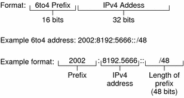
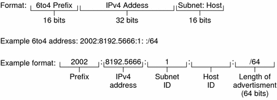

Previous
Previous
IPv6 in Depth (Reference)
This chapter contains the following reference information about the Solaris 10 IPv6 implementation.
For an overview of IPv6, refer to Chapter 3, Planning an IPv6 Addressing Scheme (Overview). For tasks on configuring an IPv6-enabled network, refer to Chapter 7, Enabling IPv6 on a Network (Tasks).
IPv6 Addressing Formats Beyond the Basics
Chapter 3, Planning an IPv6 Addressing Scheme (Overview) introduces the most common IPv6 addressing formats: unicast site address and link-local address. This section includes in-depth explanations of addressing formats that are not covered in detail in Chapter 3, Planning an IPv6 Addressing Scheme (Overview):
6to4-Derived Addresses
If you plan to configure a 6to4 tunnel from a router or host endpoint, you must advertise the 6to4 site prefix in the /etc/inet/ndpd.conf file on the endpoint system. For an introduction and tasks for configuring 6to4 tunnels, refer to How to Configure a 6to4 Tunnel.
The next figure shows the parts of a 6to4 site prefix.
Figure 11-1 Parts of a 6to4 Site Prefix
The next figure shows the parts of a subnet prefix for a 6to4 site, such as you would include in the ndpd.conf file.
Figure 11-2 Parts of a 6to4 Subnet Prefix
This table explains the parts of a 6to4 subnet prefix.
Part | Length | Definition |
|---|---|---|
Prefix | 16 bits | 6to4 prefix label 2002 (0x2002). |
IPv4 address | 32 bits | Unique IPv4 address that is already configured on the 6to4 interface. For the advertisement, you specify the hexadecimal representation of the IPv4 address, rather than the IPv4 dotted-decimal representation. |
Subnet ID | 16 bits | Subnet ID, which must be a value that is unique for the link at your 6to4 site. |
6to4-Derived Addressing on a Host
When an IPv6 host receives the 6to4-derived prefix by way of a router advertisement, the host automatically reconfigures a 6to4-derived address on an interface. The address has the following format:
prefix:IPv4-address:subnet-ID:interface-ID/64 |
The output from the ifconfig -a command on a host with a 6to4 interface might resemble the following:
qfe1:3: flags=2180841<UP,RUNNING,MULTICAST,ADDRCONF,ROUTER,IPv6>
mtu 1500 index 7
inet6 2002:8192:56bb:9258:a00:20ff:fea9:4521/64
|
In this output, the 6to4-derived address follows inet6.
This table explains the parts of the 6to4-derived address.
Address Part | Length | Definition |
|---|---|---|
prefix | 16 bits | 2002, which is the 6to4 prefix |
IPv4-address | 32 bits | 8192:56bb, which is the IPv4 address, in hexadecimal notation, for the 6to4 pseudo-interface that is configured on the 6to4 router |
subnet-ID | 16 bits | 9258, which is the address of the subnet of which this host is a member |
interface-ID | 64 bits | a00:20ff:fea9:4521, which is the interface ID of the host interface that is configured for 6to4 |
IPv6 Multicast Addresses in Depth
The IPv6 multicast address provides a method for distributing identical information or services to a defined group of interfaces, called the multicast group. Typically, the interfaces of the multicast group are on different nodes. An interface can belong to any number of multicast groups. Packets sent to the multicast address go to all members of the multicast group. For example, one use of multicast addresses is for broadcasting information, similar to the capability of the IPv4 broadcast address.
The following table shows the format of the multicast address.
Table 11-1 IPv6 Multicast Address Format
8 bits | 4 bits | 4 bits | 8 bits | 8 bits | 64 bits | 32 bits |
11111111 | FLGS | SCOP | Reserved | Plen | Network prefix | Group ID |
The following is a summary of the contents of each field.
11111111 - Identifies the address as a multicast address.
FLGS - Set of the four flags 0,0,P,T. The first two flags must be zero. The P field has one of the following values:
0 = Multicast address that is not assigned based on the network prefix
1 = Multicast address that is assigned based on the network prefix
If P is set to 1, then T must also be 1.
Reserved - Reserved value of zero.
Plen - Number of bits in the site prefix that identify the subnet, for a multicast address that is assigned based on a site prefix.
Group ID - Identifier for the multicast group, either permanent or dynamic.
For complete details about the multicast format, refer to RFC 3306, "Unicast-Prefix-based IPv6 Multicast Addresses.
Some IPv6 multicast addresses are permanently assigned by the Internet Assigned Numbers Authority (IANA). Some examples are the All Nodes Multicast Addresses and All Routers Multicast Addresses that are required by all IPv6 hosts and IPv6 routers. IPv6 multicast addresses can also be dynamically allocated. For more information about the proper use of multicast addresses and groups, see RFC 3307, "Allocation Guidelines for IPv6 Multicast Addresses".